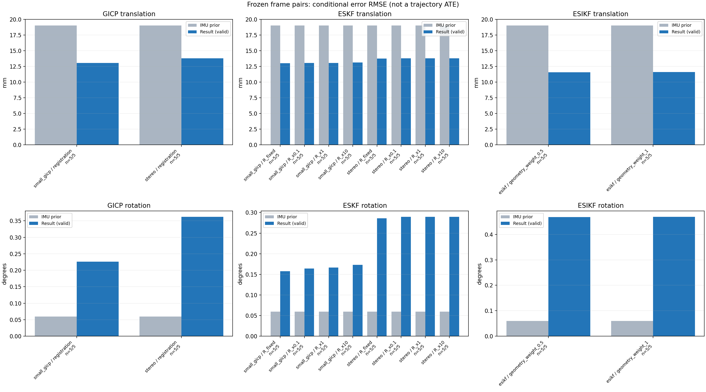

20261015_112940_pitch_up · depth=sgbm · cache=b899dcd8128471fab8a8
固定图像对与纯 IMU 先验；ESKF 回放固定 GICP 观测，ESIKF 直接读取点云。真值只用于此报告。
SGBM 调试基线：结果用于检查接口、坐标与融合行为，模型视差替换后需重新评估 GICP 精度和协方差。
误差按每对图像的锚点计算，单位 m / degrees。此处 RMSE 不是全序列 ATE；末帧受同一锚点条件约束。NIS 与条件马氏距离是诊断量，少量相关图像对不能用于宣称协方差已校准。
全部指标 CSV · R / P / K 矩阵 CSV · ESIKF 逐轮 CSV · 配置快照 · 矢量图
| stage | method | variant | valid | total | translation RMSE (m) | rotation RMSE (deg) |
|---|---|---|---|---|---|---|
| esikf | esikf | geometry_weight_0.5 | 5 | 5 | 0.011548 | 0.4681 |
| esikf | esikf | geometry_weight_1 | 5 | 5 | 0.011593 | 0.46854 |
| eskf | small_gicp | R_fixed | 5 | 5 | 0.013021 | 0.15755 |
| eskf | small_gicp | R_x0.1 | 5 | 5 | 0.013048 | 0.16431 |
| eskf | small_gicp | R_x1 | 5 | 5 | 0.013067 | 0.16628 |
| eskf | small_gicp | R_x10 | 5 | 5 | 0.013114 | 0.17329 |
| eskf | stereo | R_fixed | 5 | 5 | 0.01376 | 0.28617 |
| eskf | stereo | R_x0.1 | 5 | 5 | 0.013788 | 0.28937 |
| eskf | stereo | R_x1 | 5 | 5 | 0.013788 | 0.28937 |
| eskf | stereo | R_x10 | 5 | 5 | 0.013788 | 0.28934 |
| gicp | small_gicp | registration | 5 | 5 | 0.013046 | 0.22586 |
| gicp | stereo | registration | 5 | 5 | 0.013796 | 0.36188 |

| stage | case | method | variant | status | inliers | converged | prior_trans_error_m | result_trans_error_m | prior_rot_error_deg | result_rot_error_deg | R_rot_trace_rad2 | R_pos_trace_m2 | nis_regularized |
|---|---|---|---|---|---|---|---|---|---|---|---|---|---|
| gicp | static_start | stereo | registration | eligible | 5709 | 0 | 0.00012006 | 0.0088059 | 0.0069246 | 0.2941 | 4.7317e-08 | 2.1789e-07 | nan |
| gicp | static_start | small_gicp | registration | eligible | 7528 | 1 | 0.00012006 | 0.0078735 | 0.0069246 | 0.17293 | 4.3934e-05 | 0.00015821 | nan |
| gicp | sync_motion | stereo | registration | eligible | 5957 | 0 | 0.00096706 | 0.0081371 | 0.039675 | 0.32573 | 4.1101e-08 | 2.0484e-07 | nan |
| gicp | sync_motion | small_gicp | registration | eligible | 7833 | 1 | 0.00096706 | 0.0078834 | 0.039675 | 0.25754 | 4.5533e-05 | 0.00017302 | nan |
| gicp | main_motion | stereo | registration | eligible | 17703 | 0 | 0.0064081 | 0.019709 | 0.02833 | 0.47403 | 5.1672e-09 | 1.2302e-07 | nan |
| gicp | main_motion | small_gicp | registration | eligible | 15753 | 1 | 0.0064081 | 0.019411 | 0.02833 | 0.18284 | 5.2428e-06 | 8.1983e-05 | nan |
| gicp | main_motion_long | stereo | registration | eligible | 15126 | 0 | 0.038923 | 0.020373 | 0.12422 | 0.48691 | 6.698e-09 | 1.4972e-07 | nan |
| gicp | main_motion_long | small_gicp | registration | eligible | 12576 | 1 | 0.038923 | 0.018018 | 0.12422 | 0.33801 | 7.553e-06 | 0.00011125 | nan |
| gicp | static_end | stereo | registration | eligible | 19347 | 0 | 0.01604 | 0.002104 | 0.0024326 | 0.020328 | 5.3757e-09 | 8.6493e-08 | nan |
| gicp | static_end | small_gicp | registration | eligible | 18527 | 1 | 0.01604 | 0.0050356 | 0.0024326 | 0.10558 | 3.7765e-06 | 6.4048e-05 | nan |
| eskf | static_start | stereo | R_x0.1 | updated | 5709 | 0 | 0.00012006 | 0.0088053 | 0.0069246 | 0.29399 | 4.7317e-09 | 2.1789e-08 | 0.014991 |
| eskf | static_start | stereo | R_x1 | updated | 5709 | 0 | 0.00012006 | 0.0088053 | 0.0069246 | 0.29399 | 4.7317e-08 | 2.1789e-07 | 0.014991 |
| eskf | static_start | stereo | R_x10 | updated | 5709 | 0 | 0.00012006 | 0.0088052 | 0.0069246 | 0.29397 | 4.7317e-07 | 2.1789e-06 | 0.01499 |
| eskf | static_start | stereo | R_fixed | updated | 5709 | 0 | 0.00012006 | 0.0085761 | 0.0069246 | 0.28591 | 0.00022846 | 0.0012 | 0.014445 |
| eskf | static_start | small_gicp | R_x0.1 | updated | 7528 | 1 | 0.00012006 | 0.0078709 | 0.0069246 | 0.17276 | 4.3934e-06 | 1.5821e-05 | 0.0065681 |
| eskf | static_start | small_gicp | R_x1 | updated | 7528 | 1 | 0.00012006 | 0.0078512 | 0.0069246 | 0.17175 | 4.3934e-05 | 0.00015821 | 0.0065282 |
| eskf | static_start | small_gicp | R_x10 | updated | 7528 | 1 | 0.00012006 | 0.0076615 | 0.0069246 | 0.16251 | 0.00043934 | 0.0015821 | 0.0061594 |
| eskf | static_start | small_gicp | R_fixed | updated | 7528 | 1 | 0.00012006 | 0.0077234 | 0.0069246 | 0.16821 | 0.00022846 | 0.0012 | 0.006261 |
| eskf | sync_motion | stereo | R_x0.1 | updated | 5957 | 0 | 0.00096706 | 0.0081387 | 0.039675 | 0.32301 | 4.1101e-09 | 2.0484e-08 | 0.020067 |
| eskf | sync_motion | stereo | R_x1 | updated | 5957 | 0 | 0.00096706 | 0.0081388 | 0.039675 | 0.323 | 4.1101e-08 | 2.0484e-07 | 0.020062 |
| eskf | sync_motion | stereo | R_x10 | updated | 5957 | 0 | 0.00096706 | 0.0081394 | 0.039675 | 0.32289 | 4.1101e-07 | 2.0484e-06 | 0.020012 |
| eskf | sync_motion | stereo | R_fixed | updated | 5957 | 0 | 0.00096706 | 0.0081574 | 0.039675 | 0.31781 | 0.00022846 | 0.0012 | 0.01012 |
| eskf | sync_motion | small_gicp | R_x0.1 | updated | 7833 | 1 | 0.00096706 | 0.0079029 | 0.039675 | 0.24626 | 4.5533e-06 | 1.7302e-05 | 0.087291 |
| eskf | sync_motion | small_gicp | R_x1 | updated | 7833 | 1 | 0.00096706 | 0.0080718 | 0.039675 | 0.25354 | 4.5533e-05 | 0.00017302 | 0.069845 |
| eskf | sync_motion | small_gicp | R_x10 | updated | 7833 | 1 | 0.00096706 | 0.0085663 | 0.039675 | 0.28233 | 0.00045533 | 0.0017302 | 0.024216 |
| eskf | sync_motion | small_gicp | R_fixed | updated | 7833 | 1 | 0.00096706 | 0.0078296 | 0.039675 | 0.22797 | 0.00022846 | 0.0012 | 0.040813 |
| eskf | main_motion | stereo | R_x0.1 | updated | 17703 | 0 | 0.0064081 | 0.019701 | 0.02833 | 0.30844 | 5.1672e-10 | 1.2302e-08 | 0.016892 |
| eskf | main_motion | stereo | R_x1 | updated | 17703 | 0 | 0.0064081 | 0.019701 | 0.02833 | 0.30844 | 5.1672e-09 | 1.2302e-07 | 0.016892 |
| eskf | main_motion | stereo | R_x10 | updated | 17703 | 0 | 0.0064081 | 0.019701 | 0.02833 | 0.30844 | 5.1672e-08 | 1.2302e-06 | 0.016891 |
| eskf | main_motion | stereo | R_fixed | updated | 17703 | 0 | 0.0064081 | 0.0197 | 0.02833 | 0.3075 | 0.00022846 | 0.0012 | 0.016356 |
| eskf | main_motion | small_gicp | R_x0.1 | updated | 15753 | 1 | 0.0064081 | 0.019409 | 0.02833 | 0.14337 | 5.2428e-07 | 8.1983e-06 | 0.0013253 |
| eskf | main_motion | small_gicp | R_x1 | updated | 15753 | 1 | 0.0064081 | 0.019409 | 0.02833 | 0.14334 | 5.2428e-06 | 8.1983e-05 | 0.0013246 |
| eskf | main_motion | small_gicp | R_x10 | updated | 15753 | 1 | 0.0064081 | 0.019409 | 0.02833 | 0.14307 | 5.2428e-05 | 0.00081983 | 0.0013178 |
| eskf | main_motion | small_gicp | R_fixed | updated | 15753 | 1 | 0.0064081 | 0.019409 | 0.02833 | 0.14252 | 0.00022846 | 0.0012 | 0.0013005 |
| eskf | main_motion_long | stereo | R_x0.1 | updated | 15126 | 0 | 0.038923 | 0.020352 | 0.12422 | 0.36435 | 6.698e-10 | 1.4972e-08 | 0.0166 |
| eskf | main_motion_long | stereo | R_x1 | updated | 15126 | 0 | 0.038923 | 0.020352 | 0.12422 | 0.36435 | 6.698e-09 | 1.4972e-07 | 0.0166 |
| eskf | main_motion_long | stereo | R_x10 | updated | 15126 | 0 | 0.038923 | 0.020352 | 0.12422 | 0.36435 | 6.698e-08 | 1.4972e-06 | 0.0166 |
| eskf | main_motion_long | stereo | R_fixed | updated | 15126 | 0 | 0.038923 | 0.020349 | 0.12422 | 0.36349 | 0.00022846 | 0.0012 | 0.016172 |
| eskf | main_motion_long | small_gicp | R_x0.1 | updated | 12576 | 1 | 0.038923 | 0.018022 | 0.12422 | 0.15392 | 7.553e-07 | 1.1125e-05 | 0.015063 |
| eskf | main_motion_long | small_gicp | R_x1 | updated | 12576 | 1 | 0.038923 | 0.018025 | 0.12422 | 0.1538 | 7.553e-06 | 0.00011125 | 0.015047 |
| eskf | main_motion_long | small_gicp | R_x10 | updated | 12576 | 1 | 0.038923 | 0.01805 | 0.12422 | 0.15263 | 7.553e-05 | 0.0011125 | 0.014891 |
| eskf | main_motion_long | small_gicp | R_fixed | updated | 12576 | 1 | 0.038923 | 0.018023 | 0.12422 | 0.15257 | 0.00022846 | 0.0012 | 0.014671 |
| eskf | static_end | stereo | R_x0.1 | updated | 19347 | 0 | 0.01604 | 0.0020992 | 0.0024326 | 0.0050522 | 5.3757e-10 | 8.6493e-09 | 4.9829e-07 |
| eskf | static_end | stereo | R_x1 | updated | 19347 | 0 | 0.01604 | 0.0020992 | 0.0024326 | 0.0050522 | 5.3757e-09 | 8.6493e-08 | 4.9829e-07 |
| eskf | static_end | stereo | R_x10 | updated | 19347 | 0 | 0.01604 | 0.0020992 | 0.0024326 | 0.0050522 | 5.3757e-08 | 8.6493e-07 | 4.9829e-07 |
| eskf | static_end | stereo | R_fixed | updated | 19347 | 0 | 0.01604 | 0.0020992 | 0.0024326 | 0.0050511 | 0.00022846 | 0.0012 | 4.9812e-07 |
| eskf | static_end | small_gicp | R_x0.1 | updated | 18527 | 1 | 0.01604 | 0.0050269 | 0.0024326 | 0.01614 | 3.7765e-07 | 6.4048e-06 | 1.7517e-05 |
| eskf | static_end | small_gicp | R_x1 | updated | 18527 | 1 | 0.01604 | 0.0050269 | 0.0024326 | 0.01614 | 3.7765e-06 | 6.4048e-05 | 1.7517e-05 |
| eskf | static_end | small_gicp | R_x10 | updated | 18527 | 1 | 0.01604 | 0.0050269 | 0.0024326 | 0.016139 | 3.7765e-05 | 0.00064048 | 1.7516e-05 |
| eskf | static_end | small_gicp | R_fixed | updated | 18527 | 1 | 0.01604 | 0.0050268 | 0.0024326 | 0.016135 | 0.00022846 | 0.0012 | 1.7511e-05 |
| esikf | static_start | esikf | geometry_weight_1 | updated | 6202 | 1 | 0.00012006 | 0.0039004 | 0.0069246 | 0.52875 | 5.835e-07 | 1.1866e-06 | nan |
| esikf | static_start | esikf | geometry_weight_0.5 | updated | 6204 | 1 | 0.00012006 | 0.0040029 | 0.0069246 | 0.53078 | 1.166e-06 | 2.3737e-06 | nan |
| esikf | sync_motion | esikf | geometry_weight_1 | updated_not_converged | 6531 | 0 | 0.00096706 | 0.0052398 | 0.039675 | 0.74059 | 5.8388e-07 | 1.23e-06 | nan |
| esikf | sync_motion | esikf | geometry_weight_0.5 | updated_not_converged | 6539 | 0 | 0.00096706 | 0.0052227 | 0.039675 | 0.74017 | 1.1635e-06 | 2.4514e-06 | nan |
| esikf | main_motion | esikf | geometry_weight_1 | updated | 17956 | 1 | 0.0064081 | 0.01571 | 0.02833 | 0.27902 | 1.6681e-07 | 9.2767e-07 | nan |
| esikf | main_motion | esikf | geometry_weight_0.5 | updated | 17964 | 1 | 0.0064081 | 0.015728 | 0.02833 | 0.27797 | 3.3305e-07 | 1.85e-06 | nan |
| esikf | main_motion_long | esikf | geometry_weight_1 | updated_not_converged | 15341 | 0 | 0.038923 | 0.019369 | 0.12422 | 0.41944 | 1.2411e-07 | 1.0141e-06 | nan |
| esikf | main_motion_long | esikf | geometry_weight_0.5 | updated_not_converged | 15331 | 0 | 0.038923 | 0.019205 | 0.12422 | 0.41563 | 2.4777e-07 | 2.0136e-06 | nan |
| esikf | static_end | esikf | geometry_weight_1 | updated_not_converged | 19763 | 0 | 0.01604 | 0.0027046 | 0.0024326 | 0.12578 | 8.907e-08 | 8.6777e-07 | nan |
| esikf | static_end | esikf | geometry_weight_0.5 | updated_not_converged | 19762 | 0 | 0.01604 | 0.0026902 | 0.0024326 | 0.12646 | 1.7806e-07 | 1.7345e-06 | nan |